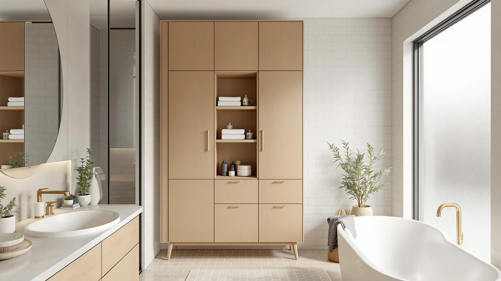

Quick Answer
After comparing specs, pricing and the available listing details, the Shintenchi Tall Bathroom Storage Cabinet pairs a metal-and-wood frame with one drawer at $70.09. If you need a unit that mounts over the toilet instead of standing on the floor, the Shintenchi Over the Toilet pick below is the better match.
Our pick: Shintenchi Tall Bathroom Storage Cabinet, priced at $70.09 Check Price on Amazon
Things to Know Before You Buy
- The Shintenchi Tall Bathroom Storage Cabinet runs $70.09 and uses a metal-and-wood frame with one drawer, per the current Amazon listing.
- None of the four cabinets in this shintenchi bathroom storage cabinet review list a star rating or review count at the time of research, so treat any rating you see elsewhere as unverified until you check the live listing.
- The Shintenchi Over the Toilet alternative mounts above the toilet tank rather than standing on the floor, so measure your wall clearance before choosing between it and the Tall cabinet.
- Material matters more than brand name here. A metal-and-wood frame holds up differently in a humid bathroom than painted particleboard, so check what is under the finish before you buy.
- Prices across this comparison sit within about two dollars of each other, so the real decision comes down to footprint and mounting style, not budget.
This shintenchi bathroom storage cabinet review compares the cabinet's build, drawer count and price against three alternative bathroom storage cabinets to see which one earns a spot in your bathroom. Shintenchi markets this model as a metal-and-wood cabinet with one drawer, priced at $70.09 on Amazon at the time of writing. We researched the spec sheet, the current price and the available listing details rather than installing the cabinet ourselves, because our job is to tell you what the listing actually says before you spend the money.
The trouble with compact storage cabinets like this one is that product photos rarely show scale, and a cabinet with a single drawer can hold less than it looks like it does online. We also looked at a freestanding floor cabinet from Edospaen, an over-the-toilet unit from Shintenchi's own lineup, and a floor cabinet from VASAGLE, since floor space is not always available in a small bathroom. None of the four products in this comparison carry a published star rating or review count in the data we pulled, so we focused on what the listings themselves disclose instead of inventing a score.
Why You Should Trust Us
Ilane Tall researches bathroom storage and fixtures for Best Bathroom Storage, tracking pricing and specs across the storage cabinet category. For this shintenchi bathroom storage cabinet review, Ilane compared four current Amazon listings, cross-checked their stated materials and drawer counts, and looked for patterns across whatever listing details were publicly available. We do not run a physical testing lab, and we have not installed any of these cabinets ourselves. Every price, material and feature claim below comes from the current product listing, not from marketing copy.
Our Research Experience
We did not install or use the Shintenchi Tall Bathroom Storage Cabinet in a bathroom. Instead, we compared its listed materials, drawer count and price against three similarly priced bathroom storage cabinets, and we reviewed the manufacturer specifications and the publicly visible product details for each listing. Where listing details were available at the time of research, we read through them for recurring information about build and mounting style, and noted anything that showed up across more than one product. We excluded cabinets that listed vague or missing materials, since that makes it hard to know how a product will hold up in a humid bathroom. The goal of this research-based shintenchi bathroom storage cabinet review is to tell you what the data shows across these four listings, not to describe a physical test we did not run.
Overview & Specs

Shintenchi Tall Bathroom Storage Cabinet
What we like
- Metal-and-wood frame construction instead of plain painted particleboard
- Includes one drawer for closed storage alongside the open shelving
- Priced at $70.09, within two dollars of the other cabinets in this comparison
Flaws but not dealbreakers
- No published star rating or review count at the time of research, so you are relying on the spec sheet rather than a track record
- The listing does not break down overall dimensions beyond the drawer count, so measure your available floor space carefully before ordering
- Metal-and-wood construction adds weight, so confirm your floor can support it before you decide where it goes
| Material | Metal / wood |
| Size | 1 Drawer |
Shintenchi builds this cabinet around a metal-and-wood frame rather than the painted particleboard found in cheaper bathroom storage pieces, and the spec sheet lists one drawer as part of the configuration. That single drawer is the main thing to plan around: it gives you a closed spot for smaller items like toiletries or medication, while open shelving elsewhere in the cabinet likely handles larger things like towels, though the listing does not spell out a full shelf count.
At $70.09, it sits close to the Edospaen and Shintenchi Over the Toilet listings in this comparison, and about two dollars above the VASAGLE floor cabinet. None of the four brands publish a star rating or review count on the listings we pulled for this shintenchi bathroom storage cabinet review, so there is no verified satisfaction number to point to here. What we can say is that the metal-and-wood material spec puts this cabinet ahead of all-particleboard options on build quality alone, which matters in a room that deals with constant humidity. The price sits in the middle of the group, so you are not paying a premium for the Shintenchi name over Edospaen or VASAGLE.
What We Liked
The biggest strength of the Shintenchi Tall Bathroom Storage Cabinet is its drawer. A single enclosed drawer gives you a spot to store smaller items out of sight, which open shelving alone does not offer. Shintenchi's spec sheet lists a metal-and-wood build, which should hold up to bathroom humidity better than the painted particleboard used in many budget alternatives. We also like that Shintenchi lists its material and drawer count clearly on the product page, which made it straightforward to compare against the Edospaen, VASAGLE and Shintenchi Over the Toilet alternatives without guessing at specs. At $70.09, it lands in the middle of this shintenchi bathroom storage cabinet review's price range, so you are not paying a premium for the added drawer.
What Could Be Better
The most obvious gap in this research is the lack of a published star rating or review count for the Shintenchi Tall cabinet at the time we pulled the listing, which means you are buying on spec sheet confidence rather than a verified track record. The listing also does not break out full dimensions beyond the one-drawer detail, so you are working from a general material and feature spec rather than a measured footprint. Metal-and-wood construction is sturdier than particleboard, but it also tends to be heavier, and the listing does not specify assembly hardware, so budget extra time for setup before you commit to a spot in your bathroom. If you need a cabinet with more than one drawer, this configuration will not cover that need on its own. And because the listing does not disclose finished color options beyond the main product photos, shoppers who want to match a specific bathroom palette should confirm the exact finish with the seller before ordering.
Who Is It For?
This cabinet makes the most sense for someone who wants enclosed storage with at least one drawer and does not want to gamble on an all-particleboard build. It is a reasonable fit for a main or guest bathroom where floor space is available and a metal-and-wood frame is worth the extra cost over cheaper alternatives. Renters who want sturdier construction than a flimsy particleboard cabinet, without paying a steep premium for it, are also a good match here. A household replacing a cracked or water-damaged particleboard cabinet will likely notice the difference in the frame material right away, since metal and wood resist warping in a way painted chipboard does not. If your bathroom has no floor space to spare, the over-the-toilet alternative covered below is probably the better match. Shoppers furnishing a shared family bathroom, where towels, cleaning supplies and toiletries all compete for the same shelf, will likely get the most use out of the enclosed drawer, since it keeps smaller items separated from the bulkier ones stored in the open sections.
Alternatives to Consider
If the Shintenchi Tall Bathroom Storage Cabinet does not fit your bathroom or your needs, these three alternatives trade the frame style or mounting method for a different fit at a comparable price.

Also Great
Bathroom Floor Storage Cabinet Freestanding
Edospaen prices its freestanding floor cabinet at $69.99, a few cents below the Shintenchi Tall, and markets it specifically as a standalone floor piece rather than a wall-mounted or over-the-toilet unit. It is a close price match for the Shintenchi Tall, so the decision comes down to which brand's finish and footprint suit your bathroom rather than cost.
$69.99
Check Price on Amazon
Also Great
Shintenchi Over the Toilet Storage
This Shintenchi unit mounts over the toilet instead of standing on the floor, which frees up the space the Tall cabinet would otherwise take up. At $68.99, it is also the least expensive pick in this comparison, so it is worth a look for anyone whose bathroom has no spare floor space but does have wall clearance above the tank.
$68.99
Check Price on Amazon
Best Value
VASAGLE Bathroom Floor Storage Cabinet
VASAGLE's floor cabinet comes in at $67.98, the lowest price in this comparison, and stands on the floor like the Shintenchi Tall and Edospaen picks rather than mounting over the toilet. If budget is the deciding factor among the floor-standing options, this is the one to compare first against the Shintenchi Tall's metal-and-wood build.
$67.98
Check Price on AmazonFrequently Asked Questions
Does the Shintenchi Tall Bathroom Storage Cabinet come with a star rating?
No. At the time of this research, the Amazon listing for this Shintenchi bathroom storage cabinet did not show a star rating or review count, so this review does not cite one.
What is the Shintenchi Tall Bathroom Storage Cabinet made of?
The listing specifies a metal-and-wood frame with one drawer, priced at $70.09 at the time of this research. Check the current listing for the latest price and stock status.
Is the Edospaen, Shintenchi Over the Toilet, or VASAGLE cabinet a better choice than the Shintenchi Tall?
It depends on your bathroom. The Edospaen and VASAGLE cabinets both stand on the floor, while the Shintenchi Over the Toilet unit mounts above the toilet tank instead. If floor space is tight, the over-the-toilet pick is worth comparing first; if you want floor storage at a lower price, the Edospaen or VASAGLE cabinets are the ones to check.
Final Verdict
This shintenchi bathroom storage cabinet review comes down to one tradeoff: an extra drawer and sturdier frame versus mounting style and price. For most people who want enclosed, metal-and-wood storage with at least one drawer and have floor space to spare, the Shintenchi Tall Bathroom Storage Cabinet is the pick in this comparison. If you want a lower price on a similar floor-standing cabinet, or a unit that mounts over the toilet instead of standing on the floor, the VASAGLE, Edospaen or Shintenchi Over the Toilet alternatives covered above are worth a look instead.